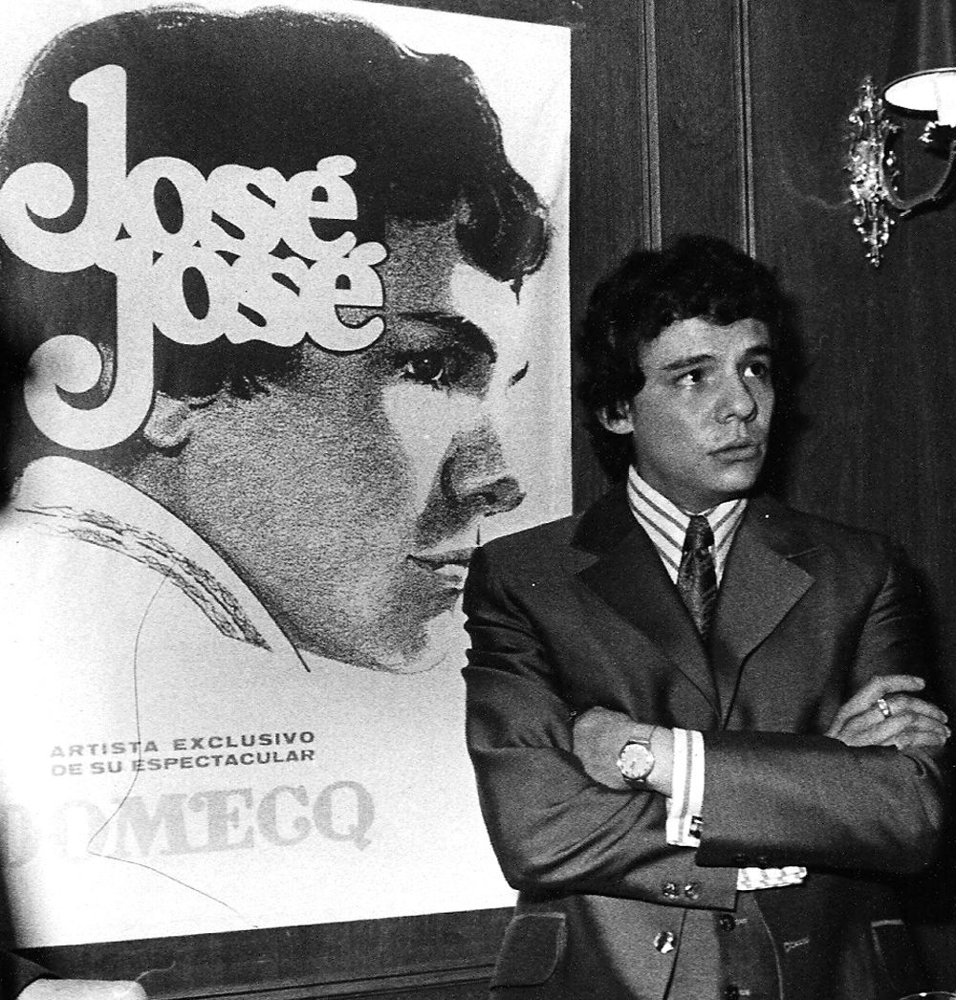

José Rómulo Sosa Ortiz, mejor conocido como José José, fue un cantante mexicano reconocido internacionalmente por su poderosa voz y emotiva interpretación. Nacido el 17 de febrero de 1948, se convirtió en uno de los artistas más icónicos de la música romántica en español durante más de cuatro décadas.
Entre sus álbumes más exitosos destacan *Secretos* (1983), producido por Manuel Alejandro, que vendió millones de copias. Otros álbumes importantes son *El Triste* (1970), *Amor Amor* (1980), y *Reflexiones* (1984). Su estilo marcó una época y definió el bolero pop moderno.
José José recibió múltiples premios a lo largo de su carrera, incluyendo nominaciones al Grammy y reconocimientos en toda América Latina. Su legado musical continúa influyendo a nuevas generaciones de artistas y su voz es considerada una de las más grandes de la música en español.